Case Studies #2 - Nutrition Facts table
Note: Table in "hassum" mode
This case study use table with the option "hassum".
Overview
Tranform a Nutrition Facts table into a HTML table can not be done straight forward. Why ? simply the relationship between the data and the header are not cleary defined and when the need to be WCAG Level AA compliant become harder.
This case study require you to have read the documentation about the table usability concept
This case study is not about how you make a HTML table WCAG Level AA compliant but on how to apply the table usability concept.
Original Data Source
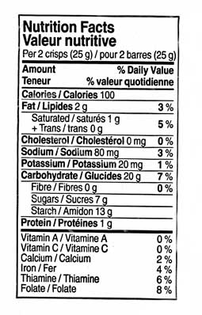The result
| Amount of | Weight | % Daily Value |
|---|---|---|
| Minerals and Vitamins | ||
| Vitamin A | 0 % | |
| Vitamin C | 0 % | |
| Calcium | 2 % | |
| Iron | 4 % | |
| Thiamine | 6 % | |
| Folate | 8 % | |
| Nutrients elements | ||
| Others | ||
| Cholesterol | 0 mg | 0 % |
| Sodium | 80 mg | 3 % |
| Potassium | 20 mg | 1 % |
| Protein | 1 g | |
| Fat | ||
| Saturated | 1 g | 5% |
| + Trans | 0 g | |
| Total Fat | 2 g | 3 % |
| Carbohydrate | ||
| Fibre | 0 g | |
| Sugars | 7 g | |
| Starch | 13 g | |
| Total Carbohydrate | 20 g | 7 % |
| Calories | 100 | |
The Table Analysing
Before...
Before to start the table analysing, it's important to understand all the information included in the table.
Caption
Almost always there, the table caption is often the first information provided. The table caption is considerated to be a group header cell at level 1.
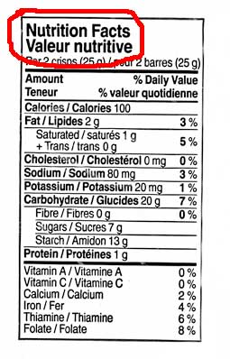Table Description / Table Summary
There is a difference between a table summary and a group summary. The table summary is a table description. The group summary is often represented by a row named "Total" after a data group.
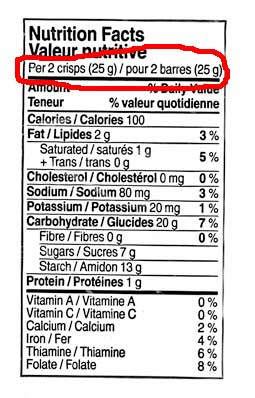Row group heading section
A table can only contain one row group heading. His location is always before any data row group. The row group heading always contain the table header column with his cells description if any. If a table have two or more row group heading, do a merge or split the table. It possible for a table to do not have a row group heading.
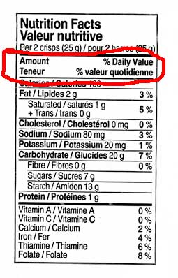The columns defined in the row group heading need to have a good structure representation of each cell in all subsequent row group.
Row Group
Find all the data and summary row group that have a direct relation to the table caption. Ofter each group a separated by a line
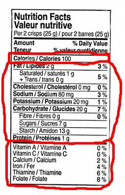Identify and Apply a Category to Each Row Group
The summary row group are ofter smaller size (number of row) than a data row group. A summary row group need to be associated at least to one data row group. Sometime, the summary row group have a different header/data cell patern for a row compared to a row in the data row group. Sometime, the summary row group are combined/merged with the group header cell.
Data row group
The first row group is identified with the letter A and the second with the letter B.
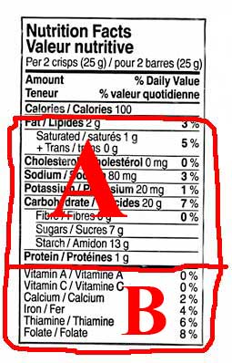Summary row group
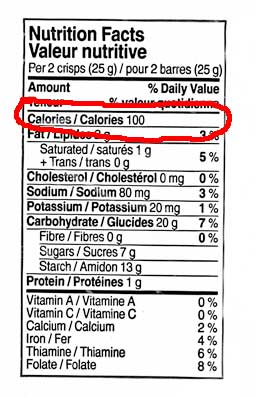Indentify and find the data level of any sub row group
This is an important step because the data row and the data row group sequence in the table will be influenced to illustrate the data level. Also the presence of summary data inside a sub row group would change the table design.
Row Group "A"
There are two sub row group. the first sub row group is identified with the Letter AA and the second with the letter AB. Both are at the level 2.
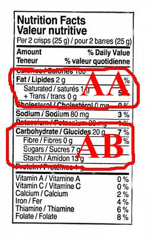Each sub row group have a summary row group.
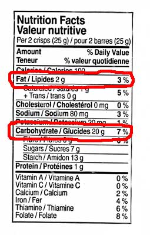Regarding the other row in the row group A, his relationship belong to the row group A to the level 1.
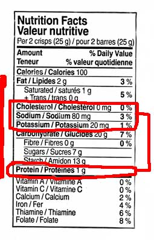Row Group "B"
The row group "B", at level 1, don't contain any sub row group.
Analysing the Data Cell Type
Here we look at what is the data cell type. This would help to define and validate the header row group.
A data cell can be identified by one or more header cell. A data cell is often qualified by a unit measure. Sometime a data cell can be hidden in a cell header or in another data cell.
- Data cell measured in "unit"
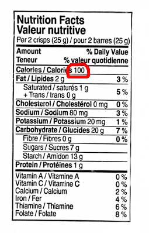 - Data cell measured in "g/mg"
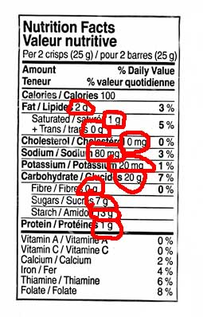 - Data cell measured in "%"
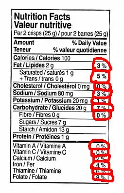
Complete your table information
Column heading
In our example the data cell measured in unit associated to the header "Calories" is considerated to be a summary group for the all the data inside the table
With the data cell identification we have:
- "Amount of" : Column heading for the row header, already provided. For clarity and easier table read the word "of" is added.
- "Weight" : New column heading issued from the second data cell type.
- "% Daily Value" : Already know column heading and represent the third data cell type
Row Group Header
In this example, we have found two data row group at level 1 and both are missing a group header cell. The summary row group is excluded here because it share a common group header cell. A search about the Nutrition Facts Table was revealed this following name for each row group: "Minerals and Vitamins" for the row group B and "Nutrients elements" for the row group A.
Create the HTML Table
With the table analysis and the table information we are able now to code with HTML the table. The French content was removed for the clarity.
A summary row group is always after a data row group. The order for the data row group level need to be the lowest level to the highest level.
The HTML5 details and summary element is used to add the table caption description. It's opened by default
Here the empty cell is not a layout cell because they represent the absence of data.
Before
Now
| Amount of | Weight | % Daily Value |
|---|---|---|
| Minerals and Vitamins | ||
| Vitamin A | 0 % | |
| Vitamin C | 0 % | |
| Calcium | 2 % | |
| Iron | 4 % | |
| Thiamine | 6 % | |
| Folate | 8 % | |
| Nutrients elements | ||
| Others | ||
| Cholesterol | 0 mg | 0 % |
| Sodium | 80 mg | 3 % |
| Potassium | 20 mg | 1 % |
| Protein | 1 g | |
| Fat | ||
| Saturated | 1 g | 5% |
| + Trans | 0 g | |
| Total Fat | 2 g | 3 % |
| Carbohydrate | ||
| Fibre | 0 g | |
| Sugars | 7 g | |
| Starch | 13 g | |
| Total Carbohydrate | 20 g | 7 % |
| Calories | 100 | |
Source Code
<table class="wet-boew-zebra hassum">
<caption>
<details open="open">
<summary>Nutrition Facts</summary>
<p>Per 2 crisps (25 g)</p>
</details>
</caption>
<colgroup><col></colgroup>
<colgroup><col><col></colgroup>
<thead>
<tr>
<th>Amount of</th>
<th>Weight</th>
<th>% Daily Value</th>
</tr>
</thead>
<tbody>
<tr>
<th colspan="3">Minerals and Vitamins</th>
</tr>
<tr>
<th>Vitamin A</th>
<td></td>
<td>0 %</td>
</tr>
<tr>
<th>Vitamin C</th>
<td></td>
<td>0 %</td>
</tr>
<tr>
<th>Calcium</th>
<td></td>
<td>2 %</td>
</tr>
<tr>
<th>Iron</th>
<td></td>
<td>4 %</td>
</tr>
<tr>
<th>Thiamine</th>
<td></td>
<td>6 %</td>
</tr>
<tr>
<th>Folate</th>
<td></td>
<td>8 %</td>
</tr>
</tbody>
<tbody>
<tr>
<th colspan="3">Nutrients elements</th>
</tr>
<tr>
<th colspan="3">Others</th>
</tr>
<tr>
<th>Cholesterol</th>
<td>0 mg</td>
<td>0 %</td>
</tr>
<tr>
<th>Sodium</th>
<td>80 mg</td>
<td>3 %</td>
</tr>
<tr>
<th>Potassium</th>
<td>20 mg</td>
<td>1 %</td>
</tr>
<tr>
<th>Protein</th>
<td>1 g</td>
<td></td>
</tr>
</tbody>
<tbody>
<tr>
<th colspan="3">Fat</th>
</tr>
<tr>
<th>Saturated</th>
<td>1 g</td>
<td rowspan="2">5%</td>
</tr>
<tr>
<th>+ Trans</th>
<td>0 g</td>
</tr>
</tbody>
<tbody>
<tr>
<th>Total Fat</th>
<td>2 g</td>
<td>3 %</td>
</tr>
</tbody>
<tbody>
<tr>
<th colspan="3">Carbohydrate</th>
</tr>
<tr>
<th>Fibre</th>
<td>0 g</td>
<td></td>
</tr>
<tr>
<th>Sugars</th>
<td>7 g</td>
<td></td>
</tr> <tr>
<th>Starch</th>
<td>13 g</td>
<td></td>
</tr>
</tbody>
<tbody>
<tr>
<th>Total Carbohydrate</th>
<td>20 g</td>
<td>7 %</td>
</tr>
</tbody>
<tfoot>
<tr>
<th>Calories</th>
<td colspan="2">100</td>
</tr>
</tfoot>
</table>
Quick view about the data level represented with the cell header
Same table but the text of each cell header was replaced by the data level
| Amount | Weight | % Daily Value |
|---|---|---|
| Level 1 | ||
| Vitamin A | 0 % | |
| Vitamin C | 0 % | |
| Calcium | 2 % | |
| Iron | 4 % | |
| Thiamine | 6 % | |
| Folate | 8 % | |
| Level 1 | ||
| Level 2 | ||
| Cholesterol | 0 mg | 0 % |
| Sodium | 80 mg | 3 % |
| Potassium | 20 mg | 1 % |
| Protein | 1 g | |
| Level 2 | ||
| Saturated | 1 g | 5% |
| + Trans | 0 g | |
| Summary Group [Level 2] | 2 g | 3 % |
| Level 2 | ||
| Fibre | 0 g | |
| Sugars | 7 g | |
| Starch | 13 g | |
| Summary Group [Level 2] | 20 g | 7 % |
| Summary Group [Level 0] because of the "tfoot" row group tag used, otherwise if it was in a tbody row group this summary group will be set to level 1] |
100 | |
- Date modified: